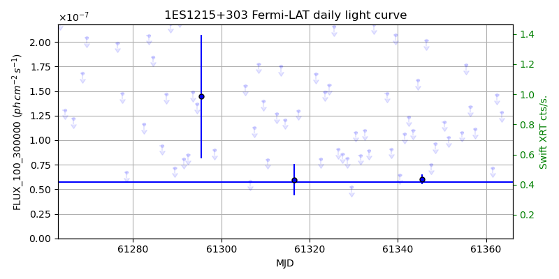

LAT Lightcurve site: https://fermi.gsfc.nasa.gov/ssc/data/access/lat/msl_lc/source/1ES_1215p303
Swift site: https://www.swift.psu.edu/monitoring/source.php?source=1ES1215+303
NED: Query
Time of last update of this page: UT: 2026-11-28 16:23 (MJD: 61372.683)
| Property | Value |
|---|---|
| R.A. | 12:17:52.08 |
| Dec. | 30:07:01.2 |
| z | 0.129 |
| 3FGL SpectrumType | PowerLaw |
| 3FGL PL Index | 1.97 |
| 3FGL Flux_100_300000 | 5.77e-08 1 / (s cm2) |
| 3FGL Flux_1000_300000 | 6.10e-09 1 / (s cm2) |
| 3FGL Flux >200 GeV | 3.46e-11 1 / (s cm2) |
| 3FGL Extrap. Crab >200 GeV | 0.15 |
| 3FGL Flux After EBL Absorption >200GeV | 1.92e-11 1 / (s cm2) |
| 3FGL EBL Crab Fraction >200GeV | 0.08 |

| MJD | dMJD | Flux | dFlux | Frac3FGL | FracCrab>200GeV | EBLFracCrab>200GeV |
|---|---|---|---|---|---|---|
| 61367.50 | 0.50 | 1.53e-07 | 0.00e+00 | 0.00 | 0.00 | 0.00 |
| 61368.50 | 0.50 | 3.98e-08 | 0.00e+00 | 0.00 | 0.00 | 0.00 |
| 61369.50 | 0.50 | 9.83e-08 | 0.00e+00 | 0.00 | 0.00 | 0.00 |
| 61370.50 | 0.50 | 1.21e-07 | 0.00e+00 | 0.00 | 0.00 | 0.00 |
| 61371.50 | 0.50 | 1.13e-07 | 0.00e+00 | 0.00 | 0.00 | 0.00 |
| MJD | dMJD | Flux | dFlux | Frac3FGL | FracCrab>200GeV | EBLFracCrab>200GeV |
|---|---|---|---|---|---|---|
| 61335.50 | 3.50 | 4.53e-08 | 2.25e-08 | 0.79 | 0.12 | 0.07 |
| 61342.50 | 3.50 | 2.06e-08 | 1.15e-08 | 0.36 | 0.05 | 0.03 |
| 61349.50 | 3.50 | 3.42e-08 | 1.76e-08 | 0.59 | 0.09 | 0.05 |
| 61356.50 | 3.50 | 6.45e-08 | 0.00e+00 | 0.00 | 0.00 | 0.00 |
| 61363.50 | 3.50 | 6.06e-08 | 0.00e+00 | 0.00 | 0.00 | 0.00 |

| MJD | dMJD | Flux | dFlux | Frac3FGL | FracCrab>200GeV | EBLFracCrab>200GeV |
|---|---|---|---|---|---|---|
| 61367.50 | 0.50 | 3.67e-08 | 0.00e+00 | 0.00 | 0.00 | 0.00 |
| 61368.50 | 0.50 | 2.09e-08 | 0.00e+00 | 0.00 | 0.00 | 0.00 |
| 61369.50 | 0.50 | 4.48e-08 | 0.00e+00 | 0.00 | 0.00 | 0.00 |
| 61370.50 | 0.50 | 8.70e-09 | 0.00e+00 | 0.00 | 0.00 | 0.00 |
| 61371.50 | 0.50 | 9.02e-09 | 0.00e+00 | 0.00 | 0.00 | 0.00 |

| MJD | dMJD | Flux | dFlux | Frac3FGL | FracCrab>200GeV | EBLFracCrab>200GeV |
|---|---|---|---|---|---|---|
| 61335.50 | 3.50 | 8.40e-09 | 3.51e-09 | 1.38 | 0.20 | 0.11 |
| 61342.50 | 3.50 | 6.28e-09 | 3.13e-09 | 1.03 | 0.15 | 0.08 |
| 61349.50 | 3.50 | 1.77e-08 | 0.00e+00 | 0.00 | 0.00 | 0.00 |
| 61356.50 | 3.50 | 1.00e-08 | 0.00e+00 | 0.00 | 0.00 | 0.00 |
| 61363.50 | 3.50 | 5.33e-09 | 0.00e+00 | 0.00 | 0.00 | 0.00 |
--------------------------------------------------------- Using user-supplied coords: 12:17:52.08 30:07:01.2 2000 --------------------------------------------------------- FLWO UT night of: 2026-11-29 Local Sid. @ Midnight: 04:08 Sunset (-15.0) (local, UT): 18:31 01:31 Sunrise (-15.0) (local, UT): 05:53 12:53 Moonrise (local, UT): 21:57 04:57 Moonset (local, UT): Moon phase: 0.72 --------------------------------------------------------- AzTime LSID UT Obj_el Obj_az Mn_el Mn_az Sep. --------------------------------------------------------- 18:31 22:39 01:31 -24.0 336.4 -32.9 32.1 49.2 19:01 23:09 02:01 -26.2 343.2 -29.4 38.9 48.9 19:31 23:39 02:31 -27.6 350.3 -25.4 45.0 48.6 20:01 00:09 03:01 -28.3 357.6 -21.0 50.6 48.3 20:31 00:39 03:31 -28.2 5.0 -16.2 55.6 48.0 21:01 01:09 04:01 -27.2 12.3 -11.1 60.2 47.8 21:31 01:39 04:31 -25.5 19.3 -5.4 64.5 47.5 22:01 02:09 05:01 -23.0 25.9 0.4 68.5 47.2 22:31 02:39 05:31 -19.9 32.1 5.8 72.2 47.0 23:01 03:10 06:01 -16.2 37.7 11.6 75.8 46.8 23:31 03:40 06:31 -12.1 42.9 17.5 79.4 46.6 00:01 04:10 07:01 -7.5 47.7 23.6 82.9 46.4 00:31 04:40 07:31 -1.6 52.0 29.7 86.5 46.2 01:01 05:10 08:01 2.8 55.9 35.8 90.3 46.0 01:31 05:40 08:31 8.0 59.6 42.0 94.4 45.9 02:01 06:10 09:01 13.6 62.9 48.1 99.1 45.7 02:31 06:40 09:31 19.4 66.1 54.2 104.7 45.6 03:01 07:10 10:01 25.3 69.0 60.1 111.7 45.4 03:31 07:40 10:31 31.3 71.8 65.6 121.1 45.3 04:01 08:10 11:01 37.4 74.5 70.5 134.7 45.2 04:31 08:40 11:31 43.6 77.1 74.0 154.7 45.1 05:01 09:11 12:01 49.9 79.7 75.2 181.1 45.0 05:31 09:41 12:31 56.2 82.3 73.6 206.8 44.9 05:53 10:02 12:53 60.8 84.3 71.0 221.2 44.8 --------------------------------------------------------- Dark hours >55 deg.: 0.00